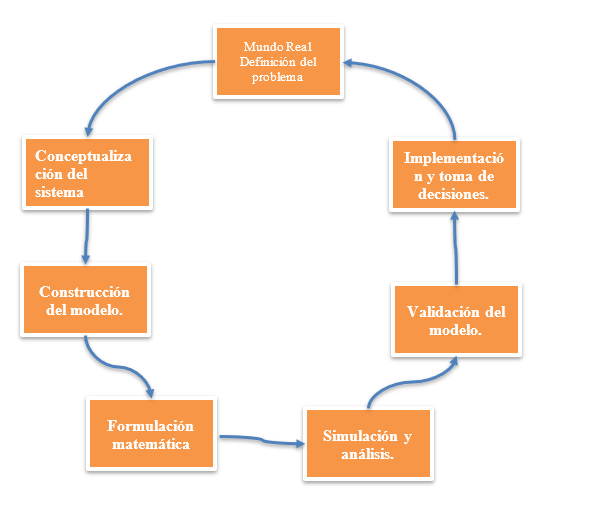

Modelado con Dinámica de Sistemas
Autor: Msc Ing. Ditmar David Castro Angulo
Contenido
- ¿Qué es la Dinámica de Sistemas?
- Arquetipos Sistémicos
- Símil Hidrodinámico
- Diagramas de Forrester
- Fases del Modelado
- Ejemplo clásico: Lotka-Volterra
¿Qué es la Dinámica de Sistemas?
dv/dt = g = 9.81 m/s²
dy/dt = v = 0 m/s
¿Qué es la Dinámica de Sistemas?
¿Qué es la Dinámica de Sistemas?
Arquetipos Sistémicos
Modelo de Crecimiento
\[ \frac{dp}{dt} = r \cdot p \]
Modelo de Crecimiento

Solución analítica
Separando variables:
\[ \frac{1}{p} \, dp = r \, dt \]
Integrando ambos lados
\[ \int_{p(0)}^{p(t)} \frac{1}{p} \, dp = \int_{0}^{t} r \, dt \]
Resultado de la integración
\[ \ln(p(t)) - \ln(p(0)) = r \cdot t \]
Aplicando propiedades logarítmicas
\[ \ln\left(\frac{p(t)}{p(0)}\right) = r \cdot t \]
Solución general
\[ p(t) = p(0) \cdot e^{rt} \]
¿Crecimiento Positivo?
\[ p(t) = p(0) \cdot e^{rt} \]
Modelo de Crecimiento Negativo
\[ \frac{dx}{dt} = (x_d - x) \cdot k \]
Modelo de Crecimiento

Solución analítica
Separando variables:
\[ \frac{1}{x_d - x} \, dx = k \, dt \]
Integrando ambos lados
\[ \int_{x(0)}^{x(t)} \frac{1}{x_d - x} \, dx = \int_{0}^{t} k \, dt \]
Cambio de variable en la integral
\[ -\int_{x(0)}^{x(t)} \frac{1}{x - x_d} \, dx = \int_{0}^{t} k \, dt \]
Resultado de la integración
\[ -\ln\left|x(t) - x_d\right| + \ln\left|x(0) - x_d\right| = k \cdot t \]
Aplicando propiedades logarítmicas
\[ \ln\left( \frac{x(0) - x_d}{x(t) - x_d} \right) = k \cdot t \]
Despejando la solución
\[ \frac{x(0) - x_d}{x(t) - x_d} = e^{kt} \]
\[ x(t) = x_d + (x(0) - x_d) \cdot e^{-kt} \]
Crecimiento Negativo
\[ x(t) = x_d + (x(0) - x_d) \cdot e^{-kt} \]
Discretización del Modelo
Partimos del modelo continuo:
\[ \frac{dx}{dt} = k \cdot (x_d - x) \]
Diferencias finitas hacia atrás
Reemplazamos la derivada por una aproximación:
\[ \frac{x(t) - x(t - 1)}{\Delta t} = k \cdot (x_d - x(t - 1)) \]
Despejando \( x(t) \)
\[ x(t) = x(t - 1) + \Delta t \cdot k \cdot (x_d - x(t - 1)) \]
Modelo
El simil Hidrodinamico
El simil hidrodinamico es una herramienta que permite representar el comportamiento de un sistema dinámico a través de un modelo físico que simula el flujo de un fluido.
Simil

Diagramas de Forrester
Los diagramas de Forrester son una herramienta gráfica utilizada para representar la estructura y el comportamiento de un sistema dinámico.
Niveles (Stocks)
| Nombre | Descripción | Representación Gráfica |
|---|---|---|
| Niveles | Representan la acumulación de recursos dentro del sistema, como población, dinero o inventario. |  |
Flujos (Flows)
| Nombre | Descripción | Representación Gráfica |
|---|---|---|
| Flujos | Representan el movimiento de recursos hacia o desde los niveles. Se muestran como flechas con una válvula. |  |
Fuentes y Sumideros
| Nombre | Descripción | Representación Gráfica |
|---|---|---|
| Fuentes y Sumideros | Entradas o salidas externas al sistema. No se modelan internamente pero influyen. | ☁️ (nube) |
Variables Auxiliares
| Nombre | Descripción | Representación Gráfica |
|---|---|---|
| Variables Auxiliares | Ayudan a definir relaciones y simplifican ecuaciones. Son intermedias. | ○ (círculo) |
Conectores de Influencia
| Nombre | Descripción | Representación Gráfica |
|---|---|---|
| Conectores de Influencia | Indican que una variable afecta a otra. Se muestran como flechas simples. |  |
Retrasos
| Nombre | Descripción | Representación Gráfica |
|---|---|---|
| Retrasos | Ocurren cuando la información que influye en una decisión no está disponible de inmediato. |  |
Lazos de Retroalimentación
| Nombre | Descripción | Representación Gráfica |
|---|---|---|
| Lazos de Retroalimentación | Ciclos de influencia. Pueden ser positivos (refuerzo) o negativos (balance). | ↺ + / ↺ − |
Fases del modelado
Reserva natural en desequilibrio
En una reserva natural, la población de venados (presas) ha disminuido debido al aumento de los pumas (depredadores). La administración del parque está preocupada porque los venados están por debajo de un nivel seguro para la regeneración de la flora. Se plantea una política de control de la población de pumas mediante caza moderada solo si los venados bajan de cierto umbral.
Modelo de Lotka-Volterra
Modelo clásico de interacción entre depredadores y presas.
\[ \frac{dx}{dt} = \alpha x - \beta xy \]
\[ \frac{dy}{dt} = \delta xy - \gamma y \]
Parámetros del modelo Lotka-Volterra
| Variable / Parámetro | Descripción | Valor |
|---|---|---|
| V0 | Población inicial de venados | 200 |
| P0 | Población inicial de pumas | 40 |
| a | Tasa de reproducción de venados | 0.08 |
| b | Tasa de depredación (eficiencia de caza) | 0.002 |
| c | Tasa de mortalidad natural de pumas | 0.04 |
| d | Conversión de presas cazadas a nuevos pumas | 0.0004 |
Diseño de una politica
Si V < V_umbral entonces Reducción de pumas adicional por caza=policy_intensity * P
¿Qué pasa si ponemos un límite al crecimiento?
\[ \frac{dP}{dt} = r P \left(1 - \frac{P}{K} \right) \]
Resumen
- Comprendimos los fundamentos de la Dinámica de Sistemas.
- Exploramos modelos de crecimiento positivo y negativo.
- Estudiamos la discretización de modelos continuos.
- Analizamos los Diagramas de Forrester y sus componentes.
- Simulamos el modelo de Lotka-Volterra aplicado a un ecosistema real.
Reflexión final
La Dinámica de Sistemas no solo nos permite modelar el comportamiento de sistemas complejos, sino que también promueve una visión integral y crítica para la toma de decisiones informadas y sostenibles.
Como futuros ingenieros, es esencial desarrollar la capacidad de pensar en términos de sistemas, identificar la retroalimentación, los retrasos, y cómo las políticas afectan el comportamiento dinámico.